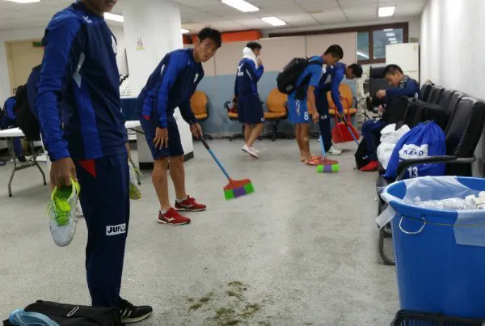

청소도르때문에 청소하고 가야함

청소도르때문에 청소하고 가야함
지들 안방인데 청소 안하면 어쩌게
진짜 컨셉 존나 웃기긴함ㅋㅋㅋㅋㅋㅋㅋ
하는 김에 우리 락커룸도 청소하고 소독하고 유니폼도 좀 빨아주고 가라
화이트보드에 아리가또 써놓고 가라 자국개최라 외국어론 안써도 돼서 편하겠네
환경 미화 메달 안주고 뭐하노
ㅋㅋㅋㅋㅋㅋㅋ
뭐 나쁜건 아니야 어히려 멋지지 뭐
애초에 치우는거 땜시 처음부터 개판으로 쓰진 않을거 아냐
라커룸 부시고 지랄 하는 색히들보단 나은듯
근데 웃기긴 웃기네 ㅋㅋㅋㅋㅋㅋㅋㅋ
갑자기 웃음 나오네 ㅅㅂ ㅋㅋㅋ
저 빗자루는 일본에도 있네
국제표준 디자인이야?
일남들은 자기집은 안치운다며? 그냥 가겠지